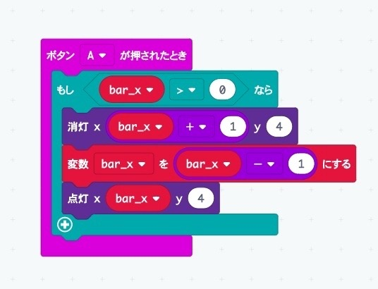
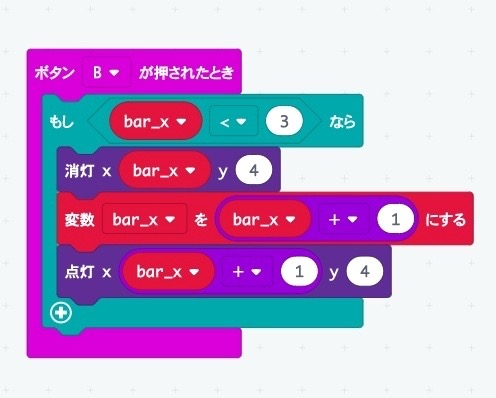
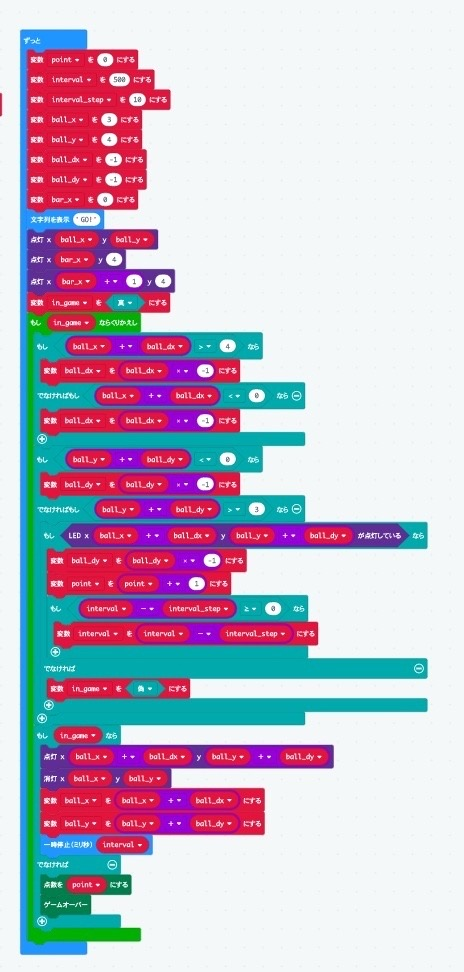

ソフトウェアネットワーク演習２
Session:1
課題：アプリを作る
私のことをもっと知って欲しいから四択クイズを作った。
問題を10問考えることと、もう一回遊ぶようにプログラミングすることが難しかった。
Session:2
課題：microbitでゲームを作る
ボールを壁に打って、数を競うゲームを作った。
AとBのボタンを同時に押してスタート。Aを押すと左に、Bを押すと右に移動できる。
ゲームが終了したときに自分のスコアが出るようにしたのと、
だんだんボールのスピードが速くなるのを工夫した。



Session:3
課題：１
寿司くいてぇ